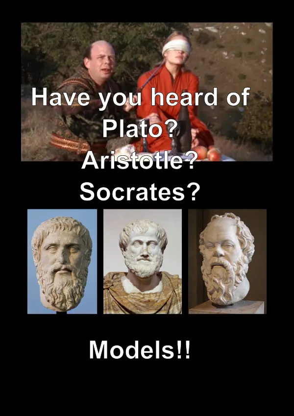
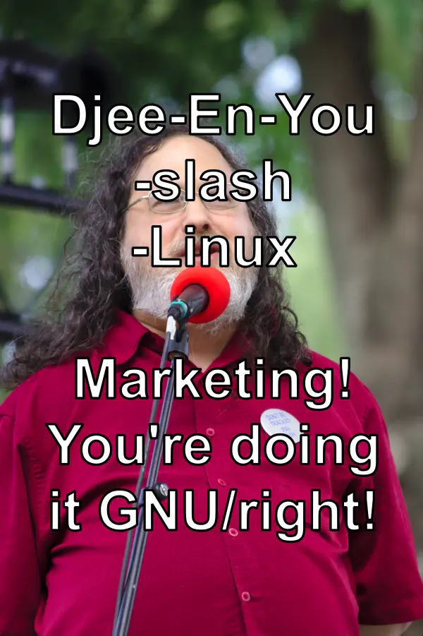
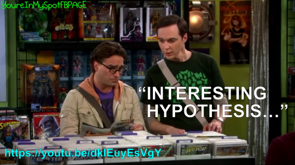

The Bible dictates that “Thou shalt not seethe [=cook] a kid [= young goat] in his mother’s milk”. To avoid any possibility of breaking that regulation, the Jewish tradition ruled that it also applies to female goats, to mature goats, and to the meat and milk of two completely unrelated goats. It is also forbidden to eat the meat with fresh milk, and it applies to beef and mutton as well (including mixing the milk and meat of two different beasts). Finally, chicken, which are incapable of milk production, may not be eaten along with any mammal’s milk either.
We are fortunate that most mathematicians were not Jewish. Otherwise, it would have been forbidden to divide by all numbers between -1 and 1.
I used to be arrogant. Now I’m simply perfect.
If the ancient Greeks had invented UNIX, Murphy’s Law would have been known as Aristotle’s Law.
Had they invented MS-Windows, Murphy’s Law would have been known as the Law of Socrates.
Microsoft’s slogan used to be “Microsoft - making it all make sense.”
Today it should be: “Microsoft - making everything make sense. Ours.”
And another twist:
“Microsoft - friendliness is our outstanding quality. No matter how much we mess up your computer work, we will always consider you our friend.”
The American Lottery - all you need is a dollar and a dream. We will take the dollar, but you can keep the dream.
I don’t Believe in Fairies
I don’t believe in fairies. Oops! A fairy died.
I don’t believe in fairies. Oops! Another fairy died.
:)-<
+--
The prefix “God said” has the extraordinary logical property of converting any statement that follows it into a true one.
Deltas to “Shit Happens” according to Religions
Judaism: God knows you will do shit, does nothing to prevent it, but makes you take the blame for it anyway.
Or alternatively:
God is all the shit, all the non-shit and all the intermediate demi-shits in between.
Let’s interpret the past according to the present and not the present according to the past.
Computer Science and C Programming
“Computer Science is no more about computers than astronomy is about telescopes”
“C programming is no more about computers than astronomy is about stars.”
A more experienced programmer…
A more experienced programmer does not make less bugs. He just realizes what went wrong more quickly.
I promised, I forgot, I broke my promise…
I promised, I forgot, I broke my promise - just shoot me and get on with it!
The First Phrase that needs to be Taught
The first phrase that needs to be taught when teaching a new language is how to say “Do you speak English?”.
The first thing that needs to be taught when teaching a new computer tool is how to exit it.
If A is A and A is not not-A…
If:
1. A is A.
2. A is not not-A.
does it also imply that:
1. B is B.
2. B is not not-B.
I know I’m blonde, but I have to colour my hair brown, so people would not think I’m stupid. Because, like the title of the book says: “You’ve only got Three Seconds”.
Actually, since Amazon sent us two books like that, you’ve only got six seconds.
He who re-invents the wheel, will understand much better how a wheel works.
Or:
He who re-invents the wheel, may actually invent a much better wheel.
Nadav Har’El’s response was:
He who re-invents the wheel will likely design a square wheel and spend a year trying to figure out why it doesn’t work properly.
C++ and Object-Oriented Programming
IMO, C++ supports Object-Oriented Programming roughly as much as COBOL supports Functional Programming.
Sometimes you don’t need to be familiar with a better alternative to know that something sucks. Take Microsoft Word for example.
Good Student vs. Bad Student
The difference between a good student and a bad student is that a bad student forgets the material five minutes before the test, while a good student five minutes afterwards.
I hope that if it was not clear before, it is not less clear now.
An apple a day keeps a doctor away. Two apples a day will keep two doctors away.
Sarah Michelle Gellar’s Next Movie
[Discussing the shortage of IT workers as of 1998 on E-mail]
Shlomi Fish to Omer Zak: “Even the NSA doesn’t have enough programmers. But it is not likely that they will have more, and that’s because Summerschool at the NSA, may might as well be the name of Sarah Michelle Gellar’s next movie.”
Omer Zak to Shlomi Fish: “And as opposed to I Know What You Did Last Summer, it is going to be scary.”
Objective philosophy is like a pencil sharpener for one’s mind.
>
> Shlomi,
>
> Have you ever considered taking a Turing test? ;-)
>
<sarcasm>
Sure I did. I sat at one point of an IRC channel, and someone tested me. Eventually it was discovered that I am a computer, but it turned out the other side was an Eliza program. Strangely enough, I could not detect that the latter fact was true.
</sarcasm>
Jack: Hi, Sophie!
Sophie: Don’t “Hi, Sophie!” me.
Jack: Don’t “Don’t ‘Hi, Sophie!’ me” me!
Corollary of Godwyn’s Law
Shlomi, I’m considering naming a corollary of Godwyn’s law after you - any discussion of anything is over when you mention Freecell Solver.
Muli: BTW, I think that any discussion only begins to gain momentum when I mention Freecell Solver.
Keeping an Idea to Yourself
There’s no point in keeping an idea to yourself since there’s a 10 to 1 chance that somebody already has it and will share it before you.
You are banished! You are banished! You are banished! - Hey! I’m just kidding!
My opinions may seem crazy but they all make sense. Insane sense, but sense nonetheless.
Ben Collins-Sussman: Tis’ true, unlike Europe, the language doesn’t change every 100 miles.
Shlomi Fish: And unlike England, the accent does not change every 10 miles.
What Happened to Christopher Michael Pilato?
What happened to Christopher Michael Pilato?
Is he gone?
Is he gone for good?
Is he gone for better?
Is he gone for best?
Is he gone forever?
Will he return?
Who is Christopher Michael Pilato, anyway?
In Philosophy, as much as in software engineering,
In Philosophy, as much as in software engineering, you don’t get credit for originality. What matters is the final product, not who came up with the idea for each feature first.
He has a high degree of idealism, a high degree of stubbornness, and an even higher degree of inability to distinguish between the two.
Hacker sees bug. Hacker does not want bug. Hacker fixes bug.
Linus Torvalds: “95% of Programmers consider themselves in the top 5%”.
Shlomi Fish’s Corollary: “95% of Programmers consider 95% of the code they did not write, in the bottom 5%”.
<rindolf> Linuxgrrl: well The Gilmore Girls is also a drama. Sort
of a dramedie, but a serious one.
<Linuxgrrl> Meh.
<Linuxgrrl> Too girly for me.
<rindolf> Linuxgrrl: you are a girl.
<rindolf> Linuxgrrl: let me guess - you’re using Debian or Gentoo,
right?
<Linuxgrrl> Gentoo.
<rindolf> Linuxgrrl: knew it.
<rindolf> Linuxgrrl: no self-respecting tomboy would use Mandrake.
C++ is complex, complexifying and complexified.
(With apologies to the Oxford English Dictionary.)
Linux - Because Software Problems…
Linux - Because Software Problems Should not Cost Money
Real Programmers Don’t Write
Real programmers don’t write workarounds. They tell their users to upgrade their software.
If his programming is anything like his philosophising, he would find 10 imaginary bugs in the “Hello World” program.
<rindolf> I’m siicckk of blogging memes.
<rindolf> You are this file type.
<rindolf> You are that type of cloth.
<jkauffman> You are this member of the Friends show
<rindolf> jkauffman: LOL.
<jkauffman> “January 4th, 2005: Just took an online quiz and it
turns out I’m a Joey type”
Tcl is LISP on drugs. Using strings instead of S-expressions for closures is Evil with one of those gigantic “E”s you can find at the beginning of book chapters.
Jewish Atheists are the only true Atheists. They beat the hell out of Goy Atheists.
An original philosopher knows the right combination of ideas to steal.
Corollaries to “To err is human…”
- To err is human - to apologise - divine.
- To have bugs is human - to fix them - divine.
- To have bugs is human - to find them - divine.
I might be mad. But I’m a mad genius.
If God exists and is the ego-maniacal, sadistic and helpless creature that is described in the Old Testament, then we’re in deep trouble.
The bad thing about hardware
The bad thing about hardware is that it sometimes works and it sometimes doesn’t. The good thing about software is that it’s consistent: it always does not work, and it always does not work in exactly the same way.
Let’s suppose you have a table
Sophie: Let’s suppose you have a table with 2n cups…
Jack: Wait a second - is “n” a natural number?
Chuck Norris wrote a complete Perl 6 implementation in a day, but then destroyed all evidence with his bare hands so no one will know his secrets.
Electrical Engineering studies.
Electrical Engineering studies. In the Technion. Been there. Done that. Forgot a lot. Remember too much.
I’m not an actor - I just play one on T.V.
Blocking Internet Pornography
Trying to block Internet pornography is like climbing a waterfall and trying to stay dry.
I’m not straight - I’m Israeli!
> You keep using that word. I do not think it means what you think it
> means.
It does not mean what I think it means, but it means what *you* think it
means.
<evil-laugh>Muahahahah…</evil-laugh>
If Chuck Norris had been born before World War II, there would have been only one world war.
We don’t know his cellphone number
We don’t know his cellphone number, and even if we did, we would tell you that we didn’t know it.
<rindolf> sarnold: you go to OGI?
<sarnold> rindolf: no; but my boss and a co-worker are professors there,
and other co-workers earned degrees there…
<rindolf> sarnold: OK.
<muli> sarnold, have you got one of those pesky things?
<sarnold> muli: just Bachelor of Arts… no Masters or Ph.D…
<rindolf> sarnold: B.Sc or B.A.?
<muli> rindolf, Bachelor of Arts is B.A.
<rindolf> muli: I know. But I was just checking.
<sarnold> rindolf: ah, you’re right, B.Sc… I chickened out on the language
requirements :)
<rindolf> muli: see?? LOL.
<muli> rindolf, sometimes, two bugs cancel each other.
<rindolf> muli: wisely spoken.
<rindolf> But mine wasn’t a bug - it was a sanity check.
-- #offtopic on OFTC
What do you mean by “WDYM”?
Chen Shapira: spent 5 hours yesterday trying to get Windows to print on my new wireless printer. It still doesn’t work. On Ubuntu it worked after few minutes.
Shlomi Fish: Heh. Linux++ .
Chen Shapira: I’d do Windows-- , but this may result in an integer underflow.
I often wonder why I hang out with so many people who are so pedantic. And then I remember - because they are so pedantic.
I met a guy in the bar, talked to her and she gave me her phone number.
Two female dogs talking about modern-life:
Jasmine: It’s so cool! On the Internet, no one knows you’re a dog!
Daisy: Yeah, but everyone can tell right away that you’re a bitch!
God gave us two eyes and ten fingers so we will type five times as much as we read.
Only wimps complain about bad code
Only wimps complain about bad code. Real men clean it up.
Wikipedia has a page about everything including the http://en.wikipedia.org/wiki/Kitchen_sink .
What does “IDK” stand for? I don’t know.
A kid always wishes they were older until they are 18. Afterwards, they always wish they were younger.
Chuck Norris and the Wikipedia
Chuck Norris read the entire English Wikipedia in 24 hours. Twice.
Give me ASCII or give me deaþ!
In the Technion, there are many ways to get from one place to the other, but they are all the same length.
Chuck Norris and Wikipedia Deletionists
Deletionists beware! If you delete Chuck Norris’ Wikipedia submission, he will delete you!
Deletionists delete Wikipedia articles that they consider lame.
Chuck Norris deletes deletionists that he considers lame.
English spelling aims to be consistent. Publicly and methodically.
Shlomi’s Father: If you don’t sort the dishwasher, the dishwasher won’t be sorted.
Shlomi: No, it won’t be sorted by me.
Shlomi’s Father: No, it won’t be sorted at all. We will throw away the dishwasher.
Together: Along with all the dishes.
In Soviet Russia, cats own you. No, wait! Cats own you everywhere.
E-mail, web feeds, and doing something productive — choose two.
The worst way to waste your time is to never waste it.
Interesting vs. Successful
There's a negative correlation between “interesting” and “successful”.
Sophie: I’m hungry today.
Jack: well, wait until tomorrow - maybe this feeling will pass.
We agree. But do we agree to agree?
In Soviet Russia, superstition believe in you.
If it isn’t in my E-mail, it doesn’t exist. And if the whole world says one thing and E-mail says another, Email will conquer
The English Wikipedia: now you don’t see it - now you do.
Shlomi is sorting the dishwasher.
Shlomi’s Father to Shlomi: if you start something, you’ve got to finish it.
Shlomi: and if you finish something, you’ve got to start it all over again.
Yo NSA, Publish or Perish
Also see the #SummerNSA initiative.
Image taken from Wikimedia Commons under CC-by-sa/GFDL.
Initial Reaction to Aristotle’s Organon
“A is A, and A is not not-A? What the f**k is he talking about??! Of course A can be not-A! I want a little of the stuff he’s on!”
Laziness will be the downfall of mankind, but I cannot be arsed to do anything about it.
Wikipedia Deletionists Don’t Die
Wikipedia deletionists don’t die. They lose notability and get deleted.
It’s kinda, sort-of… pretty much… quite… awesome I tell you - awesome! Got it? It’s kinda awesome!
Two Kinds of Fools (Extended)
There are two kinds of fools. One says, “This is old, and therefore good”.
And one says, “This is new, and therefore better”.
— John Brunner, The Shockwave Rider
Two more kinds of fools. One says: “This is popular, and therefore good”.
The other says: “This is good because it’s not popular”.
— Shlomi Fish (though may not be a 100% original sentiment).
Another kind of fool: "This is bad because it is mainstream.".
— Shlomi Fish.
Scary thought of the day: The Princess Bride: the 3-D Remake.
If Ayn Rand was born in the 1990s, she would be Christina Grimmie
If Ayn Rand was born in the 1990s, she would be Christina Grimmie.
Very much inspired by Peter Ustinov's quote: “If Botticelli were alive today he’d be working for Vogue.” (which was a praise of the then held-in-much-contempt “Vogue” magazine). However, I am taking it a little further. I hope Ms. Grimmie is not offended by me comparing her, who despite her early low-quality cover videos, is almost entirely perfectly normal and wonderful in any way, to Ayn Rand whose words, deeds, and personal life, both exhibited many issues that seem appalling in 2014, and were often quite objectionable even back then.
My point is that both Ayn Rand at the time and Christina Grimmie now, are at the cutting-edge of influencing the world and taking it forward instead of backward (despite whatever faults they both had or have). Back in Ayn Rand’s time books and the early Hollywood feature films were the primary vehicle for influence. In this day and age, however, songs and other videos on YouTube, especially by “independent” cover artists, are what bring the most long-term (and usually positive) influence among the people who matter most (= the “Alphas”).
Sorry for the long explanation.
Some links:
#TeamGrimmie Twitter hashtag
“Buffy is not a nobody…” - about why you should believe in yourself, think you're the most powerful person on Earth, and even the messiah, proudly say that “I am [Insert Name and/or Nickname here]”, and realise that you can “kick some ass”, change the world for the better, improve yourself and what you achieve, and eventually become a “winner” (even if you do not take first place at every silly-or-not-so-silly competition). References Christina Grimmie and refers to her “Feeling Good” song, which features videos of her fans from all over the world doing some amazing (or some seemingly not so amazing) feats, and is a wonderful tour-de-force and like a newer, and better, “Make your own kind of music.”.
Summer Glau Factoids - Chuck Norris getting pwned by a real-life girl - hawt!!!
Peter Ustinov quotes on Wikiquote - many positively great quotes by one of the greatest action heroes of all time. Action heroes are also known as “geeks”, “hackers”, or even - “amateurs” which used to mean people who love what they do, rather than doing it only for money, and not liking that.
Being convinced of being wrong.
I love being convinced that I was wrong before. That way I knew I improved and am now wiser. Like the Klingon warriors say when it happens: “What a great day it was for me to die!”.
Where to Find a Good Significant Other
You are much more likely to find a good significant other - with a perfectly sound mind and body - in a Sci-Fi/Fantasy/etc. conference than you are in the middle of the wilderness.
A woman is a lady even if she is or was a porn actress or a prostitute. Treat her with respect, be honest to her — be a gentleman.
Carpe diem, motherfucker!! Do you speak it?!!
Carpe diem, motherfucker!! Do you speak it?!!
Here I combine the old Latin adage meaning something like “seize the day” with the «[Something], Motherfucker!! Do you speak it?!!» meme from the “Programming, motherfucker!!” site. It is originally from the film Pulp Fiction, which I watched, but only recalled the scene after running into the “Programming, motherfucker!!” site.
It sports a photo of two ladies sitting together at a café, smiling, which is what I believe “carpe diem” is all about — not the pseudo-Utilitarianist belief that one should maximise product. To quote Chazal “He who saved one soul, has essentially saved the world entire”. Make one person happier today, and if one other person enjoyed your work (however lame or small), it was a blazing success.
Caitlin Hart - “7 Minutes”
“Summerschool at the NSA”
Summer Glau and Chuck Norris on The Muppets Show [my fanfic with a strong “Carpe Diem” message].
The holocaust did not happen, so shoot me, bitch!
( Photo of a white picket fence surrounding a pastoral field, and a caption “The holocaust did not happen, so shoot me, bitch!”.)
I was talking the other day with an online friend about Paul Graham’s What You Can’t Say and then he mentioned that in some countries, you can get imprisoned for denying the holocaust. Then I said “So that's one thing you can't say” and so now I'm saying it here (although it seems the world is ready for it).
Just for the record, I am an Israeli Jew and my late (and loved) grandfather on my father's side (who was a Polish-born Jew) lost track of most of his family during World War II. However, I think whether or not the holocaust happened is just an irrational "a-point" without respect to "The Point" of WWII history, which is if we look at the global picture we will see that the only reason for all the killing and destruction was that the Nazis leadership ordered to do that, and it was entirely pointless. Focusing on the historical details is losing the forest for the trees.
I took the picket fence image from MediaWiki commons and this captioned image is under CC-by too. Share and enjoy. In case you're wondering, it alludes to the iconic fences of the Nazis concentration and death camps. The fact that parts of it are absent is not relevant ( "Sometimes a cigar is just a cigar". )
I used GIMP, Inkscape and gwenview in the preparation of this image. Thanks goes to UnconventionalIT, and Ankh from #gimp for some assistance.
Note to Americans and Israelis: you may not find this captioned image provocative or offensive, because in the United States and Israel, there's much less taboo against treating the acts of the Nazis as holy. ( This may be a good thing. ) A typical Israeli if told that the Holocaust did not happen would likely say "Assuming that was the case, would that make the Nazis angels? Get real!". This image is primarily intended at Europeans as intellectual activism.
Also note that I actually think the Holocaust did happen, but still believe that people should be free to claim otherwise due to the freedom of speech.
Have you heard of Plato? Aristotle? Socrates? Models!!

Have you heard of Plato? Aristotle? Socrates? Models!!
Most philosophers at ancient times were essentially a form of entertainers, and were treated with the same contempt as we now treat actors, models or most recently (as of 2014) — reality T.V. show contestants, or independent (covers/parodies/remixes/etc.) artists on YouTube and other social media and Web resources (e.g.: YouTubers).
Moreover, as the busts indicate, they did some modelling even back then.
Every Mighty Klingon warrior has watched Sesame Street!
Originally a funny quote from a a scene from my screenplay Selina Mandrake - The Slayer, it stuck in my mind and grew some life of its own. Here is the rest of the explanation for the grain of truth behind it.
Evolution of Girls with Weapons
Another captioned image / info graphics with some fun at the expense of actresses with their most associated weapons.
Update: See the awesome Taylor Swift response in her video for "Bad Blood", which while I feel the song assaults my intelligence, it is great together with the video.
Every unbirthday can be the best day of your life
It’s OK if you forget my birthday, but please don’t forget my 364 unbirthdays. Contact me to say you love me, and every day can be the best day of my life so far!
What I say after someone implies that correlation implies causation
Truly You Have a Dizzying Intellect.
This is a quote from the film The Princess Bride which I decided to apply in case someone implies that Correlation implies causation.
“And the boss called me in to his office and tried to pin it all on me.”
“And the boss called me in to his office and tried to pin it all on me.”
This is a quote from the film Silver Linings Playbook, which is applicable whenever someone uses you or someone else as a scapegoat and tries to shift the blame on them.
The World is Full of People…
The world is full of people, who each have their own personal whims and quirks, and which they expect you to remember and accommodate for, all the time.
It always works at the end…
It always works at the end. Too bad it doesn't work right at the beginning.
Some people grow older and wiser. Not I. I grow older and more foolish.
A programming language that will be good for everything
How can you make a programming language that will be good for everything if you cannot even make such a screwdriver?
I understood what Monads are for 5 minutes. Then I had to let go of the understanding. It was too intense to be kept inside my head.
Taking Good Care of a Book
Shlomi’s Friend: You will take good care of this book, right?
Shlomi: Oh, don't worry! I’ll just tear the paper apart, burn it, dip it in sulphuric acid, radiate anti-matter on it, and teleport it to a black hole.
Shlomi’s Friend: That’s it? I do it to it every day.
It is a good idea to stop worrying about problems (or “problems” in quotes) that cannot be fixed.
“There’s nothing sexier than a man who does not want to have sex.”
“As a woman, there is nothing sexier than a man who does not want to have sex.”
This is a quote from the Television series Friends which I’ve reused in a screenplay and also decided to place here. Also see a Reddit discussion of this captioned image.
How to hide your Perl code
Step 1: Be Clever. Step 2: Use this to write obfuscated code.
Step 3: get fired for writing obfuscated code.
Step 4: Get killed by the maintenance programmer.
Step 5: Burn in hell for a milliard years for writing obfuscated code.
Step 6: Profit??
A new programming language
I want to create a programming language called “Multiply” so people can say “I program in Go, Forth, and Multiply”.
Take your schedule estimates and multiply them by Pi. Take your expected profits and divide them by Pi.
When there is a PyPy booboo, then PyPy goes byebye!
“One does not simply cast an American actress for a Britishwoman’s role.”
“One does not simply cast an American actress for a Britishwoman’s role.”
This was inspired by a a Twitter conversation where some people suggested that I should consider casting Emma Stone instead of Emma Watson for the role of Selina in my Selina Mandrake - The Slayer film.
It is not quite accurate because Renée Zellweger played Bridget Jones in Bridget Jones’ Diary, Anne Hathaway played Jane Austen in Becoming Jane, Gwyneth Paltrow played an Englishwoman in Shakespeare in Love, and recently Meryl Streep played The Iron Lady.
The real issue is that I believe Emma Watson is the only actress who can play Selina, and may have kind of modelled and adapted the character of Selina after her, having deviated from my original concept.
Update: being the do and let do
proponent that I am, I think an Emma Stone take on Selina (or a Cookie Monster one or whatever) can be both different and great.
“One does not simply set up an E-mail service.”
“One does not simply set up an E-mail service.”
Setting up an E-mail service has become a non trivial task due to the numerous anti-spam measurements.
“Djee-En-You-slash-Linux…Marketing! You’re doing it GNU/right!”

“Djee-En-You-slash-Linux…Marketing! You’re doing it GNU/right!”
A naïve way to pronounce "GNU/Linux", and why it is a bad idea marketing-wise. Also see Linus Torvalds about Linux having a cool name.
Emma Watson does not need a wand
Emma Watson played Hermione in the Harry Potters, but she doesn't need a wand to kick your ass.
In Selina Mandrake, the titular protagonist (whom I want to be played by Emma Watson) is able to "kick ass" (or "slay" and/or "dispel") without needing a wand or any other violent weapon.
This captioned image was originally conceived for use in a different screenplay and has later provided inspiration for a scene in Selina.
For you people lacking imagination: you can figuratively "kick someone's ass" by convincing them they had been wrong, or by winning in Checkers or Bohnanza or Darts or electronic sports or whatever, or alternatively by enlightening someone.
(That put aside, I don't rule out that Emma Watson is a good mixed martial arts fighter despite appearances to the contrary. Do note that while she might get angry (which has been erroneously referred to as "verbal violence"), she won't attack you out of the blue or even deliberately kick a friendly cat or dog.)

- - **Bea:** Occupation?
- - **Mel:** Stand-up Philosopher!
- - **Bea:** Oh! A bullshit artist!
Most philosophers at ancient times (and similar phenomena such as the Israelite nev'im) were essentially a form of entertainers. I suspect "le-nabé" meant "to be crazy / to act crazy" including in today's casual sense. These philosophers were treated with the same contempt as we now treat actors, models or most recently (as of 2014) — reality T.V. show contestants, or independent (covers/parodies/remixes/etc.) artists on YouTube and other social media and Web resources (e.g.: YouTubers).
Many philosophers were joking and didn't take their philosophies seriously. They were often amateur (= artists or workers who enjoy their work, regardless of how much or how little they were paid; a.k.a: "geeks") and polymaths, who accepted different opinions, or people who built, parodied, and expanded upon their work.
I suspect that despite what Jaynes describes in his book, most of the good nev'im and story tellers of ancient times were only hypomanic (= mildly manic) at worse, or possibly manic, who satirised fanatical or cynical zealots, often spoke in prose, drama or freeform verse, and were in effect "stand-up comedians".
One does not simply say “no” to an Alpha Female

One does not simply say “no” to an Alpha Female.
This purposely alludes to sex, but is about something else. In the Bible, Rahab is being visited by Canaanite soldiers who ask her if she hides the Israelite spies, and they leave after she testifies that it isn't the case. Even today, alpha females are held with enough admiration and respect to assume they know what they are doing. That is because, among humans, sex appeal corresponds to competence.

“Interesting Hypothesis”
I'm probably not the first, but in order to help avoid diluting the meaning of the word "theory" in its scientific context with its casual meaning of a "hypothesis", I decided to follow Dr. Sheldon Cooper's lead and call such non-proven suspicions "hypotheses" even when talking about casual ones.
It may sound funny now but Comedy is simply a funny way of being serious.
to quote Peter Ustinov. I have a hypothesis (ha!) that large parts of the Hebrew Bible and Greco-Roman Philosophy were funny back then, only now they are considered gospel, appalling, or obvious.
“Yeah! Like I could lose it!”
“Yeah! Like I could lose it!”
I noted when chatting online that the reason Madonna has not been cast into an acting role (as of March 2021) was likely not because she lost her acting skills. This made me recall that scene from Friends. I later reused it in my "Qoheleth" screenplay.
Sic Transit Gloria J-Law! “You used to be Sarah Michelle Who??”
Sic Transit Gloria J-Law! “You used to be Sarah Michelle Who??”
My attempt at a demotivational poster ( Based on the ao2.it demotivational poster Inkscape template .).
Both SMG and Jennifer Lawrence ("J-Law") appear to have become somewhat obscure among the younger generations.
“Gotta be a badass to play one in the movies”
"Gotta be a badass to play one in the movies!" - Arnold @Schwarzenegger at your service!
See:
Meme in context in Terminator: Liberation
"I'm Not a Doctor, but I Play One on TV" - TV Tropes
“Hasta la vista, baby tank girl! When you got to shoot - shoot! Then talk.”
“Hasta la vista, baby tank girl! When you got to shoot - shoot! Then talk.”
See:
“Hail Fluttershy, Princess of Princesses, head of the secret cabal leadership of the Mossad, the already top secret intelligence agency of the Zionist conspiracy”
Meme in context in Terminator: Liberation
Badass Fluttershy - based on Badass Fluttershy [V2] [Wallpaper] by demon1887 on DeviantArt
Coverage:
“It is too easy”
From "Ross and Phoebe argue about Evolution.". I used it in my "Qoheleth" screenplay.
“I’m the Little Red Riding Hood of Messiahs — my Apocalypse is badder than yours”
“I’m the Little Red Riding Hood of Messiahs — my Apocalypse is badder than yours”
Photo of Chuck Norris holding guns with the caption of “I’m the Little Red Riding Hood of Messiahs — my Apocalypse is badder than yours”.
See the Midrash.
One does not simply read Tolkien’s Lord of the Rings
One does not simply read Tolkien’s Lord of the Rings.
Inspired by an answer to a question on my FAQ, this quote alludes to the fact that many people, including I, find the book The Lord of the Rings tedious, overly verbose, hard to follow, and non-memorable. The fact that the meme originated from its films' adaptation might add a little to the irony.
Jack: I suggest we stop eating for one year and thus save a lot of money. But what will we buy with all the money we save?
Sophie: we'll buy food!


{kind=link}
{kind=link}
{kind=link}
{kind=link}
{kind=link}
This bit used to appear on my signature for a short while, but people got mad because it was too long, so I replaced it.